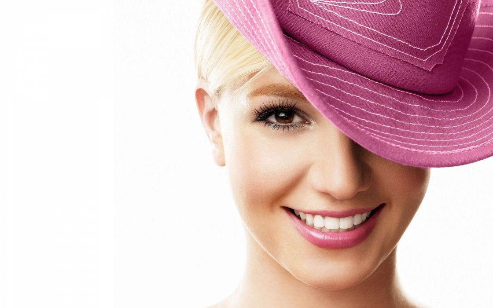

Often referred to in interviews, cover stories and promotional
material as the new princess of pop.
Here's a time line Britney Spears's life:
1981 - Born in McComb, Mississippi, U.S.
1991- When she was only 8 years old, her mother
took her to Atlanta for an audition for Disney’s
The Mickey Mouse Club
. Spears was rejected at the time for being too young, but in the
process she was introduced to a talent agent, Nancy Carson.
1992- she again auditioned for
The Mickey Mouse Club and was selected this time along
with other child artists like Justin Timberlake, Ryan Gosling,
Christina Aguilera, etc. The show was cancelled after two seasons
and Spears went back to Kentwood.
1997 - Spears was appointed by the senior vice
president of A&R to work with the producer Eric Foster who shaped
her voice into more of pop style and her
first album was recorded in Cheiron Studios, Stockholm,
Sweden.
1999 - Her debut album
…Baby One More Time was released and it topped the
Billboard 200 chart as soon as it came out. Its title track ranked
at number one at Billboard Hot 100 and it became the biggest selling
album by a teenager.
2000 - Spears’ second studio album
Oops!... I Did It Again was released. It broke the
record of highest debut sales by any solo artist. Its title track
did exceptionally well in Australia, New Zealand, UK, etc. she did
the tour for the album in the same year.
2004 - She became engaged with Kevin Federline, an
American back dancer, after being with him for just 3 months. They
got married after sometime and had their first child
Sean Preston Federline in the next year.
2005 - Spears gave birth to her second child with
Federline, Jayden James Federline. In the same year,
she filed for divorce with Fedeline and they both agreed to share
the joint custody of their two children.
2007 - She released Blackout which sold
3 million copies all over the world and won Album of
the year award at the MTV Europe Music Awards. She performed on
‘Gimme More’ at MTV VMAs in the same year.
2008 - Her sixth studio album ‘Circus’ was released
and became a number one in Czech Republic and Canada. She became the
youngest female artist to have 5 of her albums on number one in the
Guinness Book of World Records.
2011 - She released her seventh studio album
Femme Fatale, which ranked at number one in US,
Australia, Canada, etc. In the same year, she toured for ‘Femme
Fatale’ and received positive reviews from the critics for it.
2013 - She’s had a residency in Las Vegas’s Planet
Hollywood called Britney: Piece of Me
2016 - Spears confirmed via social media that she
had begun recording her ninth studio album
2019 - Spears announced her second Las Vegas
residency show, Britney: Domination
"For me, success is a state of mind. I feel like success isn't about
conquering somthing; it's being happy with who you are". -
Britney Spears